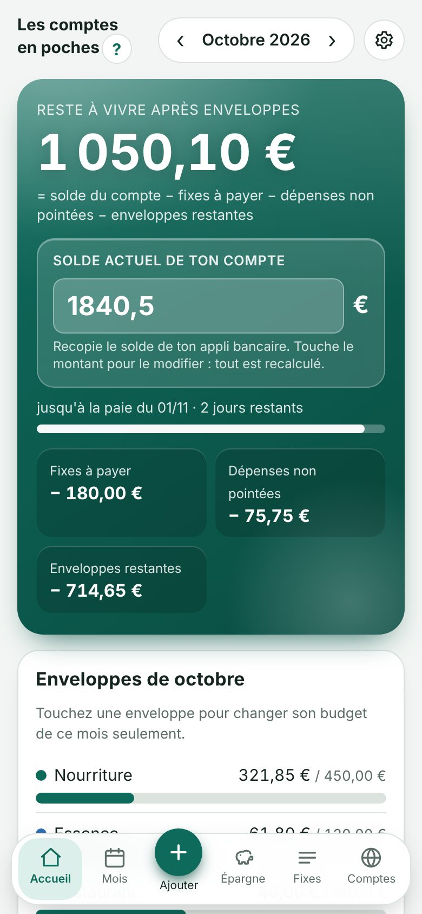
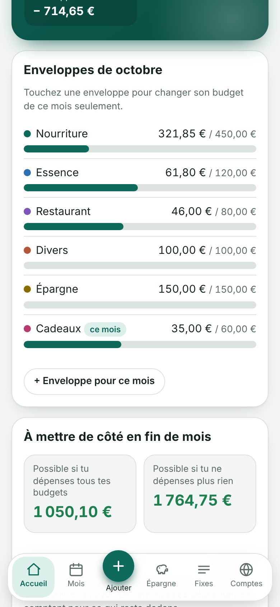
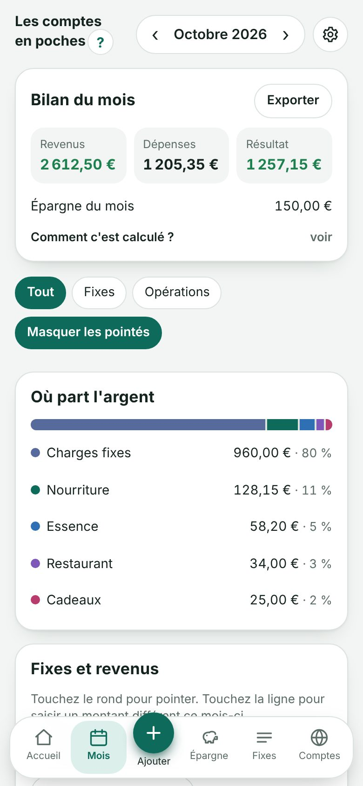
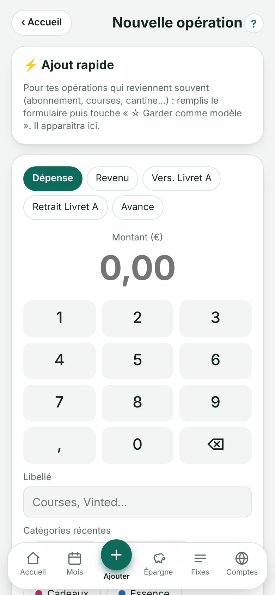
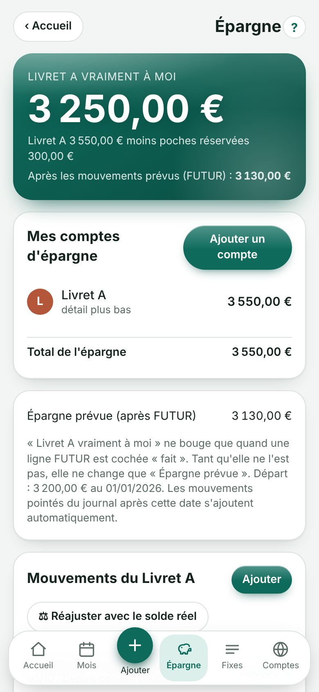
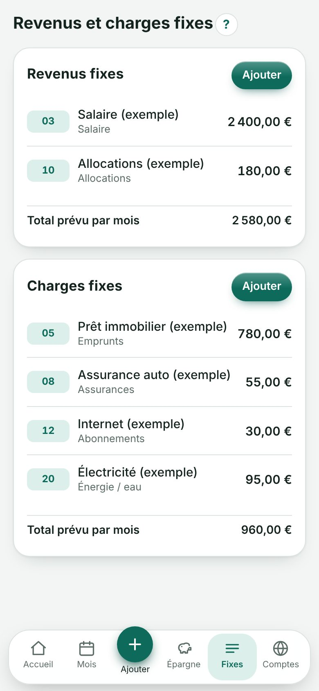
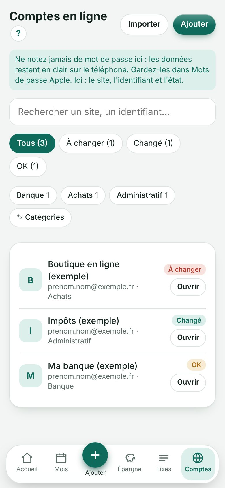

Un seul chiffre à regarder : ce qu'il te reste à vivre jusqu'à la paie. Gratuit, sans publicité, sans compte, et tes comptes ne quittent pas ton téléphone.
Ouvrir l'appliVoir la démo






Essaie sans rien installer. La démo ouvre l'appli avec des données d'exemple. Rien n'est enregistré, et si tu as déjà l'appli, tes vrais comptes ne sont ni touchés ni affichés.
Voir la démo3 minutes, avec le son : le reste à vivre, les enveloppes, l'ajout rapide, le pointage, une avance, le Livret A et ses poches, les comptes en ligne. Ouvrir la page de la vidéo pour la partager.
Ici : solde du compte − fixes à payer − dépenses non pointées − enveloppes restantes. Tu sais tout de suite ce que tu peux encore dépenser jusqu'à la paie. Souvent ailleurs : des graphiques, mais pas la réponse à « combien il me reste ? ».
Ici : aucune publicité, aucun abonnement, aucune inscription. Souvent ailleurs : version payante, compte obligatoire ou accès à ta banque.
Ici : tout est enregistré sur ton appareil, chiffré par ton code (Face ID en option). Il n'existe aucun serveur de l'appli. Souvent ailleurs : tes opérations passent par les serveurs de l'éditeur.
Ici : un budget par enveloppe (nourriture, essence…) avec une barre verte, orange puis rouge. Un budget différent un mois précis, ou une enveloppe pour ce mois seulement, en deux touches.
Ici : l'appli reprend ton classeur Excel et échange avec lui par un fichier (via OneDrive par exemple). Bilan du mois en Excel ou en PDF, rapprochement avec ton relevé de banque.
Ici : installation depuis Safari, sans App Store, plein écran, et l'appli marche sans connexion. Aussi sur Android, tablette et ordinateur.
Le reste à vivre, le solde de ton compte à recopier depuis ta banque, les enveloppes du mois, ce que tu peux mettre de côté en fin de mois et la prévision du solde jusqu'à la paie, avec alerte si tu risques le rouge.
Le bilan du mois (revenus, dépenses, résultat, épargne) expliqué, où part l'argent, les fixes à pointer, les opérations, la recherche et l'export.
Dépense, revenu, versement ou retrait du Livret A, avance. Pavé numérique, catégories récentes, modèles pour ce qui revient souvent.
Ton Livret A (mouvements, ajustement au centime, mouvements futurs qui s'archivent tout seuls), tes poches d'épargne et tes objectifs avec ce qu'il faut mettre de côté par mois.
Tes revenus et charges qui reviennent chaque mois, avec le jour, le montant prévu et un montant différent pour un mois précis.
Un carnet pour retrouver tes sites et identifiants, avec des catégories que tu changes toi-même. Jamais de mot de passe : l'appli te le rappelle.
Couleurs, mode clair ou sombre, rappel à l'ouverture, code et Face ID, sauvegardes, synchro Excel, mode démo, nouvelle année, historique des mises à jour et guide d'utilisation.
Aucune donnée n'est collectée. Pas de compte, pas de serveur, pas de statistiques, pas de publicité. Tes comptes sont enregistrés uniquement sur ton appareil, chiffrés (AES-GCM) avec ton code si tu actives le verrouillage.
Ce qui passe quand même par Internet : au démarrage, l'appli charge ses polices et deux outils de lecture de fichiers Excel et PDF depuis des sites publics. Aucune de tes données n'est envoyée.
À savoir : l'appli n'est pas ta banque et ne se connecte pas à ton compte : tu recopies ton solde et tu compares avec ton relevé. Ce n'est pas un conseil financier. Ne mets jamais de mot de passe ni de code bancaire dans l'appli.